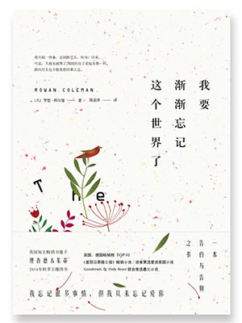
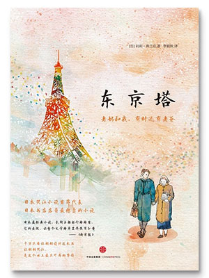
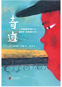

这不安的世界，不如在书中寻找宁静
“闭门即是深山，读书随处净土。”世界浮华，别走太快，读读好书，放松身心，沉淀思绪，重新出发。这不安的世界啊，不如在书中寻找宁静
01
《我要渐渐忘记这个世界了》
【英】罗恩•科尔曼

克莱尔从来就不是一个顺从生活的人。在人生的每一个转折点，她的选择，都与大多数人截然不同。如今，与心爱的人一起慢慢变老，陪伴着孩子成长，不错过他们生活中的每一件事，成为克莱尔最简单的心愿。可是，即便这样简单的愿望，她也没办法实现了；亲爱的人、熟悉的场景、斑斓的过往，都将从她的生命里渐渐淡出，以她无法掌控的方式——她得了罕见的阿尔茨海默病。她知道，这是命运跟她开的一个巨大的玩笑。但她依然决定，正视这未来，竭尽所能去生活。
一句话推荐语：比死亡更可怕的，是遗忘。
02
《东京塔》
【日】利利•弗兰克

为了生计在小吃店工作，总是忙碌，脸上笑容却不曾失去的老妈；我的功课再烂，也不曾对成绩单发表任何意见的老妈；买东西永远不会想到自己，只想到我的老妈；只有我一个人吃饭，也会做好几道菜的老妈；明明手头拮据，却当场付出十几万买车给我的老妈；一直到得了胃癌的临终，还拼命用不能动的嘴唇，不放弃地想在最后留一点什么给我的老妈；怕死后还要麻烦别人，预先为自己的葬礼每月存三千块钱的老妈。 这样的一个老妈，总要等到分离才想起要珍惜。
一句话推荐：讲妈妈的故事，红肿着眼睛也要一口气读完。
03
《奇迹》
【日】是枝裕和 / 【日】中村航

爸爸妈妈离婚后分别两地，哥哥航一与妈妈生活，弟弟龙之介和爸爸住在一起。 航一在学校里听到传闻：两辆列车的交汇就像流星，对着这个瞬间许愿就会发生奇迹！于是，他怀抱着一家四口重新团聚的愿望，和弟弟一起克服各种困难，踏上了见证奇迹的冒险之旅。 我们都在用各自的方式拒绝乏味的人生，所有的坚持都会成为奇迹！
一句话推荐：很是枝裕和！电影画面感好强。
查看更多推荐书单 >